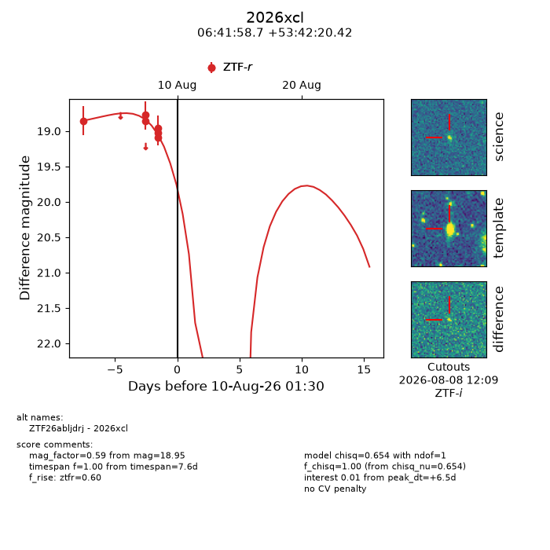
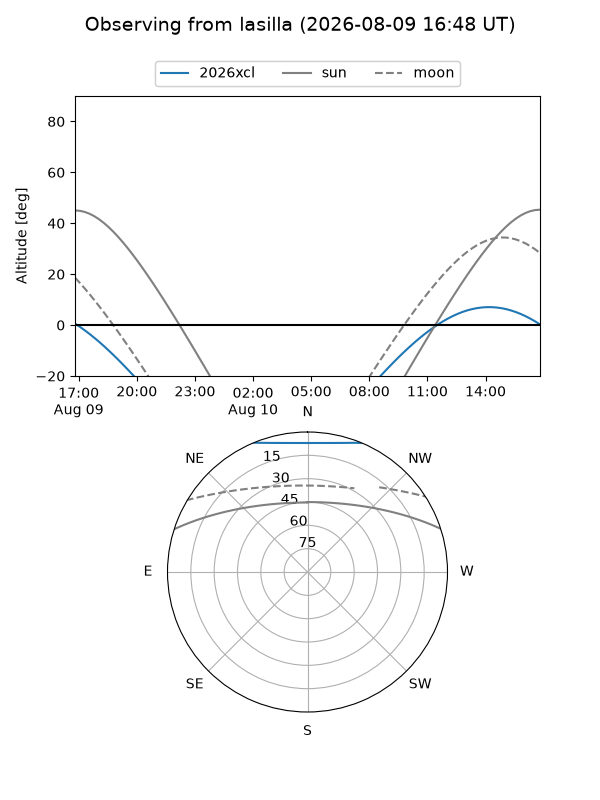
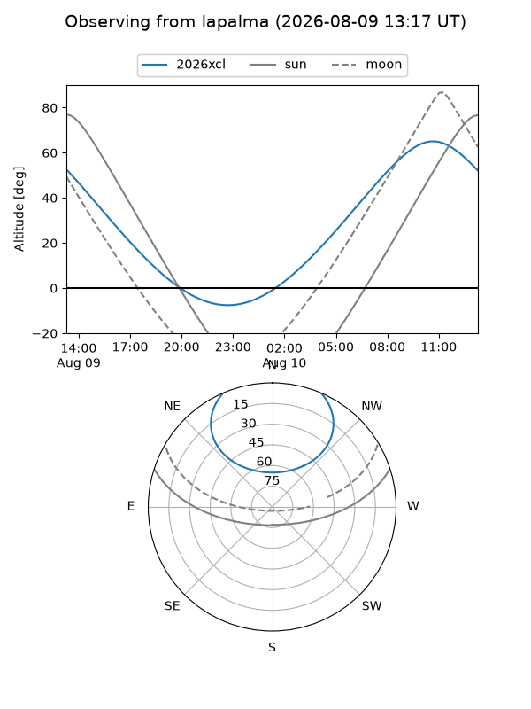
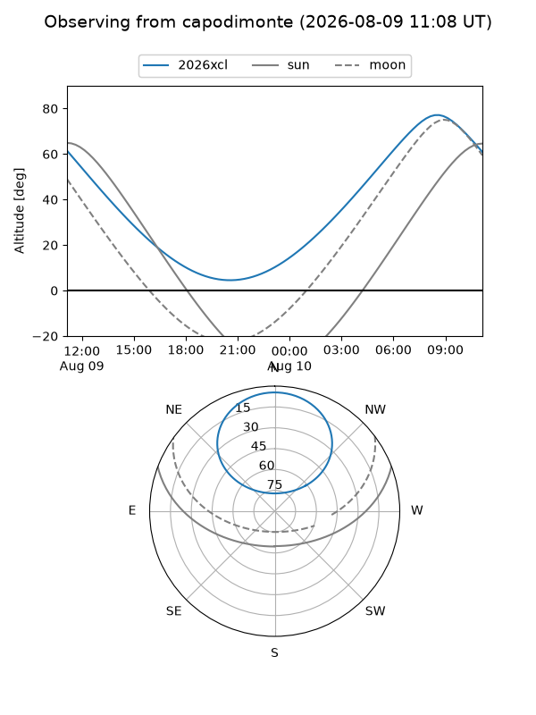
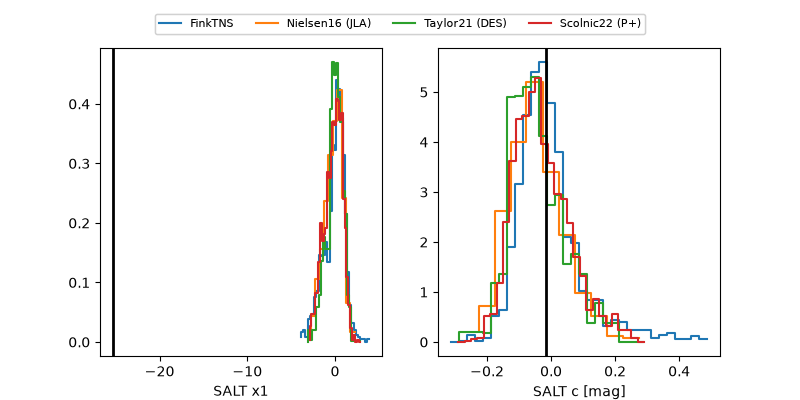

2026xcl
Target 2026xcl at 2026-08-10 13:26
Aliases and brokers:
FINK-ZTF: ztf.fink-portal.org/ZTF26abljdrj
Lasair-ZTF: lasair-ztf.lsst.ac.uk/objects/ZTF26abljdrj
ALeRCE-ZTF: alerce.online/object/ZTF26abljdrj
YSE-PZ: ziggy.ucolick.org/yse/transient_detail/2026xcl
TNS name: wis-tns.org/object/2026xcl
Direct TNS query: direct search
alt names
ZTF26abljdrj (ztf,fink_ztf)
2026xcl (tns,yse)
Coordinates:
equatorial (ra, dec) = 100.4946,+53.70567
equatorial (HMS+DMS) = 06:41:58.71,+53:42:20.42
galactic (l, b) = (162.0049,+20.22937)
Flags:
TNS type: nan
peak dt: +7.0
Photometry:
last ztfr=18.95
6 ztfr detections
Lightcurve

Visibility



Additional plots
